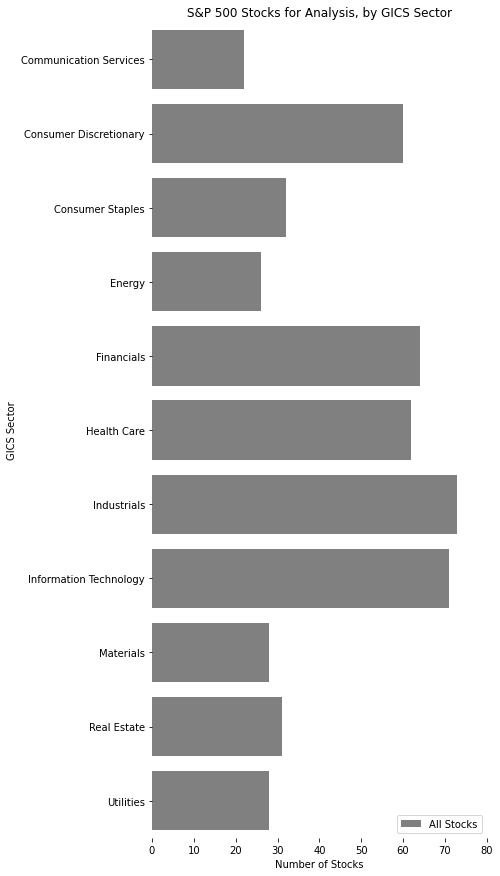
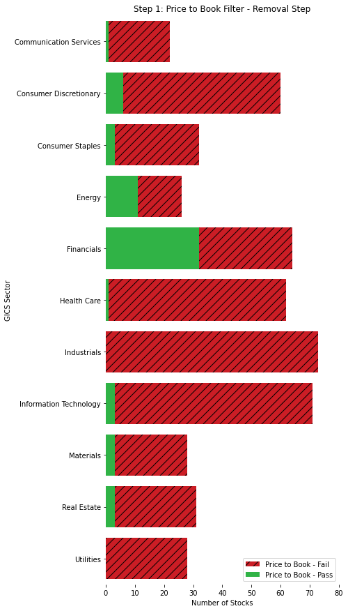
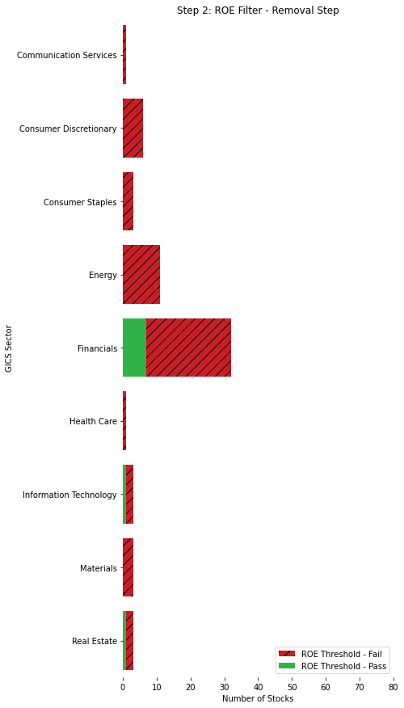
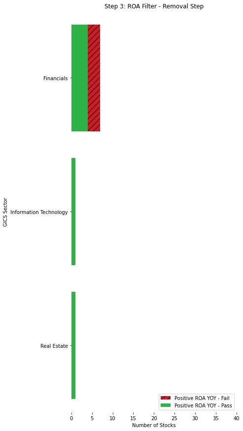
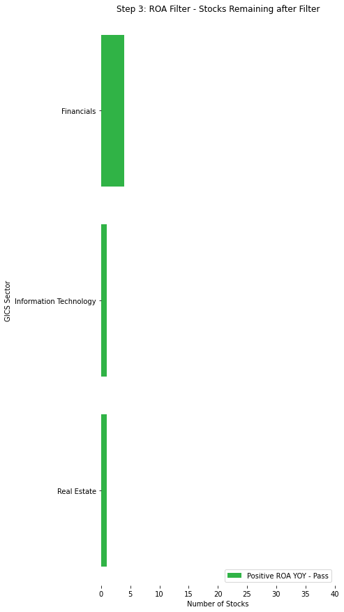
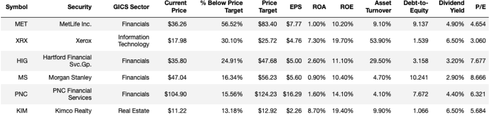

Allie Bergmann, Chris Thorne
A first-year project for the University of Michigan’s Master of Applied Data Science program’s Milestone I class.
This project seeks to deploy a data pipeline that independently, from start to finish, scrapes S&P 500 names, pulls fundamentals data through Quandl and pricing data from Yahoo!Finance, then, through a series of easily modifiable code, filters for value stocks and returns a dataframe of possible options with relevant investing metrics.
This project will analyze the underlying components of major market indices to identify company stocks that are trading at a discount to their value. We will determine this value using a Price-to-Book (P/B) ratio, and filtering stocks additionally based the following criteria on a yearly reporting basis:
With publicly available data, we will be able to calculate a valuation for each stock, then isolate which are trading below that valuation. Since the metric we will be using to provide a price target does not necessarily account for intangible assets (common in technology companies), we have also added the additional metrics in our filtering process to consider the other factors contributing to a company’s growth and efficiency. These value stocks are often posited in the financial world to have more potential for greater upside, as they are trading below the price that they are deemed to be worth.
The goal and motivation of the project is to efficiently and quickly identify stock picks that may be suitable for a value investing portfolio using data sources. Previously, all of these stocks would have had to have been modeled and analyzed painstakingly by hand or in Excel.
Questions we want to answer include:
Initial collection of stock ticker data utilized a pandas read_html call to the corresponding Wikipedia website for Data Source #2. This generates a dataframe that we will later leverage for iteration through the Quandl and yfinance APIs. The dataframe initially contains nine columns, but we will remove the SEC filings, Headquarters Location, Date First Added, and CIK columns as they will not be useful in our analysis. (data_collector.sp500_list_retrieval())
Once we have a dataframe of stocks, we will isolate the Symbols list to acquire the tickers for which we need data. The list will be run through the Quandl API on a loop. With the Quandl API, there are a few occurrences of missing data. These are primarily due to companies with multiple share classes, where it recognizes one and not the other. Additionally, a few are missing because they may not be available in the Quandl dataset. We will eliminate these from consideration altogether, as there is really no way to acquire this information without an additional API, and filling in financial information by hand is not really appropriate or efficient (would require hand-combing financial reports).
Fortunately, this dataset is fairly clean to start. Quandl has done an excellent job of maintaining an up-to-date database. This data is being delivered in a time series format, and will be grouped and analyzed by dates and keys (tickers). Since nearly all of the metrics we will be using are readily available, there will be minimal calculations required to arrive at our price targets and eligibility criteria. (data_collector.fundamentals_data_pull())
In Step 2b, we will actually leverage the dictionary returned by Step 2a. We will iterate through each dataframe of ticker information and append the most recent data. Since financial reporting dates are typically at the end of the month regardless of day of the week, there exist many instances of there being a mismatch between dates on pricing and fundamentals data. To combat this, we will merge the datasets and sort by the date in descending order, backfilling the data so as to show the most recent value. This will allow us to see the most recent closing price as of the day of reporting, and most recent reporting numbers (though this data ended up not being used). Additionally, we will set a current price as its own column, so that comparisons may be made at each observation to the current state of the stock price.
In cases where data is not available for a stock, we will again remove the stock from the dataset. Similarly, missing data may be a lack from the API (meaning we would require an additional source) or it would need to be manually entered, which on a daily basis is simply not realistic or efficient.(data_collector.pricing_data())
In step 3, we take the data acquired from Steps 2a and 2b and start comparing metrics and developing filters. To do this, we will iterate through the dictionaries (key, value pairs being ticker, data dataframes) and apply the below logics to generate boolean columns for each.
In order to better demonstrate the process of the value stock picker analysis, we produced a set of visualizations that show how stocks are being filtered down. Important note - the actual Python code that applies the value filters described earlier in this document are applied in parallel and not incrementally as seen below, but for the purpose of illustrating the impact of each these filters, we’ve broken down each step to show the impact that these filters have on resulting stock picks.
Before we start filtering data, we can see the distribution of S&P 500 companies by sector. Our initial dataset, once we have appended the appropriate fundamentals and pricing data and eliminated any tickers with missing data points, will contain 497 stocks.

S&P 500 Distribution
The S&P 500 is weighted by market capitalization, meaning larger companies have more impact on the movement of the index, but those companies may fall in different sectors, as we can see below. Coincidentally, at the time of this writing, Information Technology and Consumer Discretionary contain some of the largest companies (MSFT, AAPL, FB, etc.) and are also some of our largest subsets.
The larger, more popular companies with high prices are unlikely to meet our filtering criteria, as “value stock” indicates that the price is undervalued compared to the company’s actual book value.
Because of the current COVID-19 situation affecting markets, we would expect things like tech, healthcare, communication services, and consumer staples to be overvalued, as many are flooding to them due to their societal value right now. Conversely, we would expect to see prices for banks and financial firms (real estate, etc.) suppressed quite a bit, due to the low interest rate environment and uncertainty surrounding defaults on mortgages and other financial instruments, upon whose revenue they rely. Because of this, we hypothesize that our results will show a tendency towards the financial sector.
To explore this hypothesis further, we will apply a filter that checks for this concept of “book value”. As with all of our filtering criteria, a boolean column will be created for each filtering metric, and if a stock meets the criteria it is labeled True, if it does not or contains missing data pertaining to those metrics, it is labeled False.
Reference Function: filters.pb_price_target()
</br>
The first step in the filtering process will be to check the Price-to-Book ratio, and then compare the book value per share to the current share price.
The Price-to-Book ratio is the current share price divided by the book value per share. Book value per share is the book value (assets less liabilities) divided by the outstanding shares. If a stock’s P/B ratio is less than one, that means that it trades for less than the value of its assets.
These can be useful for companies that perhaps have negative earnings or inconsistent earnings, which is relevant in the current uncertain environment. Additionally, they can be a sign of trouble for a company, so we will also incorporate a “% Below Price Target” metric that allows for the user to determine a margin of safety, or, effectively, how much are you willing to be off from the price target to make it worth your while.
First we will filter for a P/B ratio less than 1, but greater than 0. The “greater than 0” will account for any negative P/Bs that may be due to excessive write-offs. We will also pull the “Book Value per Share” metric, and compare it to the current price. Any company that has a price greater than its book value per share will be eliminated.

P/B Filter Distribution
Once we retain only companies with a P/B greater than 0 and less than 1, and a current price less than their price target (book value per share), we see a large reduction in the dataset. Two GICS Sectors are eliminated completely at this step - Industrials and Utilities. The two sectors with a noticeable retention in possible value stocks are Financials and Energy.
As mentioned earlier, a low book value per share and P/B below 1 doesn’t necessarily mean a good deal. It can also indicate that a company is in trouble. So, we will apply additional filters to try to identify trends that would indicate a possible company with strong underlying financials.
Reference Function: filters.roe()
</br>
The next filter we will apply is Return on Equity (ROE). ROE is considered the return on net assets, and indicates the effectiveness of management to use investors’ money to generate profits. It shows the rate at which management is growing the company’s value, and is calculated as the Annual Net Income divided by the Average Shareholder’s Equity (annual).
ROE can vary from industry to industry, so it is important to do additional research to verify the relative performance of the stock. The S&P500 long term average ROE is 14%, and anything less than 10% is generally considered “poor.” To ensure that we do not filter out too many possibilities, we will settle with 10% as our threshold for now.
A lot of the stocks remaining from the previous filter are under-valued, but seem to also not be very efficient in their revenue generation. Thus, once we apply this filter, you can again see a large reduction in stocks. Ultimately, the only remaining GICS Sectors are Financials, Information Technology, and Real Estate, with less than 10 observations in each.

ROE Filter Distribution
This filtering allows us to isolate who has a track record to actually generate a decent return on our investment, based on recent past performance.
Reference Function: filters.pos_yoy_roa()
</br>
Since a large majority of our filtering and criteria are dependent on a company’s assets (book value, etc.), we want to make sure that management for each of these companies is effectively using these assets to generate profit. To do this, we will look at Return on Assets (ROA), or a measure that determines how much profit a company earns for every dollar of its assets. ROA is calculated as the Annual Net Income divided by Total Assets. It is similar to ROE, but focuses more on assets than shareholder equity.
The reason we will utilize both ROE and ROA, despite their similarities, is that we also want to account for leverage (debts). The accounting equation states Assets = Liabilities + Shareholder Equity. If a company does not have any debt, then both Shareholder Equity and Total Assets (denominators in each equation) will be the same, and thus ROE and ROA will be the same. The more debt a company has, the more liabilities rise, and thus the more the total Assets will increase, but not necessarily equity. Therefore, this will amplify ROE in relation to ROA. If ROA is sound and the company maintains manageable debt loads, and ROE is strong, then a company may be a good fit for investment.
We want ROA to be as high as possible, but because these are value stocks they may be on a rebound and we don’t want to miss an investment opportunity. So, instead, to filter for ROA, instead of maintaining a threshold like ROE, we will sort each ticker’s dataframe by date and determine if the ROA is greater than the previous year’s. If the ROA is increasing over time, we have reason to believe that management is getting more effective at turning assets into profits.

ROA Filter Distribution
After applying this filter, we can see that only a few financial firms are eliminated. This is likely because financial firms can be known to have high leverage ratios to fund their lines of business, like loans, etc. The filter sees no impact to the Information Technology or Real Estate sectors.
Reference Function: filters.pos_yoy_eps()
</br>
Earnings per Share (EPS) is a very fundamental metric in the financial world. It indicates the dollar value the company is generating for each outstanding share. It is calculated as the Annual Net Income divided by the number of diluted outstanding shares. If we see an increase in EPS over time, it is a sign that the company is growing its bottom line and the “slice of the pie” that each shareholder gets.
To analyze this metric, then, we will do a similar comparison to how we did for ROA, where we sort the data for each ticker chronologically, and then determine if the EPS has increased over the previous year. If it has, it is labeled in it’s boolean filtering column as “True,” and if not it is “False.” As we can see here, this actually does not eliminate any of the previously remaining tickers.
At this time, we are only comparing to the previous year. However, if we wanted to verify a trend over a certain period, we could look back even further and say that either EPS or ROA needed to be increasing over x periods, which may result in further filtering of the final dataset.
The final set of stocks remaining includes 4 stocks from the Financial sector, 1 stock in IT, and 1 stock in the Real Estate sector.

Remaining Stock Distribution
The final output of value stocks available for investment, as determined by our criteria, is outlined below, sorted by the percentage below their book value per share, from greatest to least. We utilized the aggregations.most_recent() function to pull the most recent observation (valuation) of each ticker and aggregate them all in a dataframe. We then utilized aggregations.filter_for_value_stocks() to return only those stocks that had “True” values in all of the filtering columns developed above - recall, all of these happen in parallel in the screener itself. If even one criterium was labeled as “False,” it did not match what we were looking for in a value stock and was eliminated. The output was then reduced to more relevant metrics (common ones used in stock valuation) using the aggregations.clean_output() function. We then pass through all of our functions in order from start to finish in the run_value_screener() function in the value_screener module.
The final product produces the following output:

Final Results
When looking at this data, we can see that an investor may want to make other considerations, such as a particular dividend yield, debt-to-equity ratios, or P/E ratios. For example, per our earlier discussions, if an investor wanted to pick the stock with the highest ROA and lowest Debt-to-Equity, they may want to look at KIM, so long as they feel the margin of safety is appropriate.
We were able to answer our first question (“What is an appropriate valuation for the stock price, based on P/B?”) in our first filtering step here by leveraging the Book Value per Share. We debated between tangible book value per share and regular, but landed on regular as it is commonly used and easier to understand for the common user. We also answered our second question (“Is the current stock price above or below that valuation?”) in our first filtering step, by comparing the current price as we pulled from yfinance to the book value per share answered by Question 1.
Our third question ended up being two-fold (“Which of the stocks in the popular indexes, like the S&P 500, are trading below our valuation, and thus have the potential for greater returns?”). We first filtered by those that were trading below our valuation in the first step, but to answer the second half of the question (“have the potential for greater returns”) we had to turn to our filtering metrics in the following steps. We did not want to rely solely on P/B, as there are some valid reasons a stock may be trading below book value, so we wanted to ensure that we were seeing management trends that validated our investment thesis.
One of the biggest challenges in finance is that everyone has an opinion on the best way to value a stock. Everyone looks at different things or values a certain metric (or metrics). To ensure that the code was flexible enough to support the diverse opinions of the financial world, we made the filters module standalone so more criteria could be added with the only rule being to add a “filter_” at the start of the boolean column, and the script will automatically account for it in the filtering process. Should we have wanted to add, remove, or modify filters, we could have done so easily in the modularized code. At times, we realized that our filtering criteria may have been too restrictive (i.e. ROE > 14% or greater, to match or outpace the S&P 500), so we lowered the threshold to 10% with a change in the keyword argument to provide more options.
An interesting takeaway from this is analysis is, as we suspected, financials dominate the value space right now. That said, it appears that they appear to have high debt, possibly making them unsuitable for some investors. Such investors may want to add a debt-to-equity filter, or swap it out for one of the others. Ultimately, some of the most compelling options are the two stocks outside of the financials sector. That said, current market environments with work-from-home actually may make Xerox (whose primary source of income is a subscription model for office printer usage) a dangerous play, a factor that cannot be coded with a filter, but may be able to be accounted for with a threshold on a margin of safety. What this shows us is that this screener is great for narrowing down options, but for common investors should not be used without a little more manual analysis.
Our team utilized a joint effort, capitalizing on each member’s skillset and strengths, and communicating steps throughout. Chris Thorne, with a data product management background, created all of the visualizations for this project as well as the corresponding notebook, and configured the Google Collab and Google Drive environments wherein the team collaborated to get the initial scripts running smoothly. Allie Bergmann, with a fintech and algorithmic trading background, determined the pricing and valuation metrics that would be used in the analysis. She wrote the majority of the screener code itself with help from Chris in researching and exploring the Quandl library, and bundled the final code into script files and Jupyter notebooks. The financial references in this report were derived from Allie’s financial background and previous experience in value investing.
Note: This project utilizes a paid student license, and this API key and resulting data may not be distributed beyond the grading of the project.
Disclaimer: This report is for educational and research purposes only and is not intended to be used as an official investment recommendation. All investment/financial opinions expressed in this document are from the personal research and experience of the project owners and are intended as educational material. Although best efforts are made to ensure that all information is accurate and up-to-date, occasionally unintended errors or misprints may occur in the data. We make no guarantees of financial returns based on this analysis. It is important to do your own analysis before making any investment based on your own personal circumstances. All financial decisions should be made with the help of a qualified financial professional.
At this time, neither author owns any shares in any of the outputs as of 09/24/2020 and neither has any known conflict of interest.